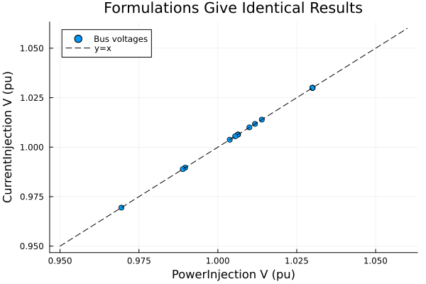
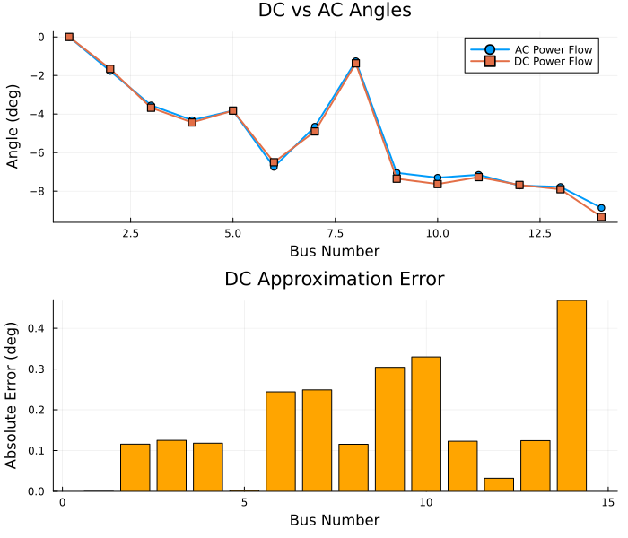
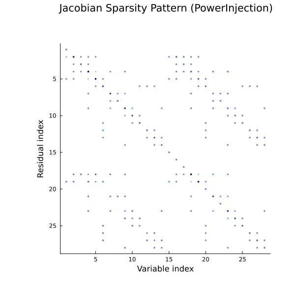

Power Flow Formulations and Solvers
This notebook explores different formulations and solver algorithms for power flow analysis:
- Formulations: PowerInjection, CurrentInjection, DCPowerFlow
- Algorithms: NewtonRaphson, RobustNewton, FastDecoupledXB
- Linear Solvers: KLU ordering options, GPU acceleration
- Jacobian Analysis: Sparsity patterns and structure
- Convergence Behavior: Performance comparison
See Power Flow Guide for detailed theory.
Setup
using Powerful
using Powerful.PowerFlowData
using Plots
using DataFrames
using Powerful.SparseArrays
using Powerful.LinearAlgebra
using PrintfLoad Test System
# Load IEEE 14-bus system
case = PowerFlowData.parse_network(joinpath(pkgdir(Powerful), "cases", "ieee14.raw"))
sys = SystemModel(case)
println("Loaded IEEE 14-bus system:")
println(" Buses: ", length(sys.models.Bus))
println(" Branches: ", length(sys.models.Branch))
println(" PQ Loads: ", length(sys.models.PQ))
println(" PV Generators: ", length(sys.models.PV))Loaded IEEE 14-bus system:
Buses: 14
Branches: 16
PQ Loads: 11
PV Generators: 4Part 1: AC Power Flow Formulations
PowerInjection vs CurrentInjection
Both formulations give identical physical results but differ in numerical behavior.
PowerInjection (Polar):
- Variables: θ (angle), V (magnitude)
- Equations: P = V∑V(G·cos + B·sin), Q = V∑V(G·sin - B·cos)
- Pros: Standard formulation, slightly faster
- Cons: Division by V → numerical issues near voltage collapse
CurrentInjection (Rectangular):
- Variables: Vᵣ (real), Vᵢ (imaginary)
- Equations: Iᵣ = G·Vᵣ - B·Vᵢ, Iᵢ = G·Vᵢ + B·Vᵣ
- Pros: Better conditioning near low voltage, no division by V
- Cons: Slightly more iterations for well-conditioned cases
Solve with PowerInjection (Default)
PowerInjection formulation (polar coordinates)
prob_pi = ACPowerFlowProblem(sys, PowerInjection())
sol_pi = solve(prob_pi, NewtonRaphson())
println("PowerInjection Results:")
println(" Converged: ", sol_pi.converged)
println(" Iterations: ", sol_pi.iterations)
println(" Residual: ", sol_pi.residual_norm)
println(" Variables: $(length(sol_pi.dae.y)) (θ + V)")PowerInjection Results:
Converged: true
Iterations: 4
Residual: 3.2540081740251026e-12
Variables: 28 (θ + V)Solve with CurrentInjection
CurrentInjection formulation (rectangular coordinates)
prob_ci = ACPowerFlowProblem(sys, CurrentInjection())
sol_ci = solve(prob_ci, NewtonRaphson())
println("CurrentInjection Results:")
println(" Converged: ", sol_ci.converged)
println(" Iterations: ", sol_ci.iterations)
println(" Residual: ", sol_ci.residual_norm)
println(" Variables: $(length(sol_ci.dae.y)) (Vᵣ + Vᵢ)")CurrentInjection Results:
Converged: true
Iterations: 4
Residual: 6.550315845288424e-14
Variables: 28 (Vᵣ + Vᵢ)Verify Both Give Identical Physical Results
Extract voltage magnitudes from PowerInjection (has v directly)
v_pi = get_all_vars(sol_pi, :Bus, :v)14-element Vector{Float64}:
1.03
1.03
1.01
1.0064182134199788
1.0139300447020223
1.03
1.0062975792003375
1.03
0.9896406371243133
0.988895098466245
1.0054902612877386
1.0117637572015261
1.0037732703003135
0.9694486258430118CurrentInjection uses rectangular coordinates (Vᵣ, Vᵢ) Need to compute magnitude: V = √(Vᵣ² + Vᵢ²)
v_r_ci = get_all_vars(sol_ci, :Bus, :v_r)
v_i_ci = get_all_vars(sol_ci, :Bus, :v_i)
v_ci = sqrt.(v_r_ci.^2 .+ v_i_ci.^2)14-element Vector{Float64}:
1.03
1.03
1.0100000000000005
1.0064182134198794
1.013930044701932
1.0300000000000318
1.0062975792001334
1.0300000000000011
0.9896406371239532
0.9888950984659433
1.0054902612875964
1.0117637572014473
1.0037732703001188
0.9694486258421399Compare
max_diff = maximum(abs.(v_pi .- v_ci))
println("Maximum voltage difference: ", max_diff)
println("Formulations agree: ", max_diff < 1e-8)Maximum voltage difference: 8.719691635405979e-13
Formulations agree: truePlot comparison
scatter(v_pi, v_ci,
xlabel="PowerInjection V (pu)",
ylabel="CurrentInjection V (pu)",
title="Formulations Give Identical Results",
label="Bus voltages",
legend=:topleft)
plot!([0.95, 1.06], [0.95, 1.06], ls=:dash, color=:black, label="y=x")
When to Use Each Formulation
PowerInjection:
- Well-conditioned systems
- Normal operation (voltages 0.95-1.05 pu)
- Slightly faster (~3-5% less time)
CurrentInjection:
- Stressed systems (heavy loading)
- Poor initial guesses
- Near voltage collapse
- When PowerInjection fails to converge
Pro tip: Try PowerInjection first; fall back to CurrentInjection if convergence fails.
Part 2: DC Power Flow
Linear Approximation for Fast Analysis
DC power flow makes strong approximations:
- All voltage magnitudes = 1.0 pu (ignored)
- Small angle differences: sin(θᵢ - θⱼ) ≈ θᵢ - θⱼ
- Negligible resistance: r << x
- Reactive power ignored completely
Result: Linear system → converges in 1-2 iterations!
Use cases:
- Fast contingency screening (N-1 analysis)
- Initial guess for AC power flow
- Large-scale transmission planning
- Security-constrained unit commitment
DC Power Flow
prob_dc = ACPowerFlowProblem(sys, DCPowerFlow())
ws_dc = setup_powerflow_newton(prob_dc; use_sparse=true)
println("DC Problem dimensions:")
println(" Variables: $(length(ws_dc.iter_dae.y)) (angles only, no voltages)")
println(" Residuals: $(length(ws_dc.iter_dae.g)) (P equations only, no Q)")DC Problem dimensions:
Variables: 14 (angles only, no voltages)
Residuals: 14 (P equations only, no Q)Solve
y0_dc = copy(ws_dc.iter_dae.y)
sol_dc = solve_powerflow_newton!(ws_dc, y0_dc; abstol=1e-10, maxiters=50)
println("\nDC Results:")
println(" Converged: ", sol_dc.converged)
println(" Iterations: ", sol_dc.iterations, " (linear problem!)")
println(" Residual: ", sol_dc.residual_norm)DC Results:
Converged: true
Iterations: 2 (linear problem!)
Residual: 1.0547118733938987e-15DC vs AC Angle Comparison
Extract angles from DC and AC solutions using getallvars
θ_dc = get_all_vars(sol_dc, :Bus, :theta)
θ_ac = get_all_vars(sol_pi, :Bus, :theta)14-element Vector{Float64}:
0.0
-0.030889488052363804
-0.06192075737642622
-0.0753779378041258
-0.06674497569798812
-0.1177320784486816
-0.08122423044264039
-0.021899363458570402
-0.12303724344184239
-0.1274403768419337
-0.12478293439600781
-0.13459737679704212
-0.13574374968984587
-0.1547931120641637Convert to degrees
θ_dc_deg = rad2deg.(θ_dc)
θ_ac_deg = rad2deg.(θ_ac)14-element Vector{Float64}:
0.0
-1.7698372967202272
-3.5477980619227827
-4.3188377045760244
-3.8242054111979655
-6.7455512084125715
-4.653805598561313
-1.2547411001991018
-7.049514772141236
-7.301795732599556
-7.149535496149079
-7.711861624002588
-7.777543952508446
-8.868992018972168Calculate errors
abs_error = abs.(θ_dc_deg .- θ_ac_deg)
rel_error = 100 .* abs_error ./ (abs.(θ_ac_deg) .+ 1e-10) # Avoid division by zero14-element Vector{Float64}:
0.0
6.530917377380865
3.5250553204241246
2.7323761486634157
0.06789209515406618
3.6159289124118006
5.344931619836614
9.195457044722108
4.313920246013772
4.513917014274546
1.7175339053012753
0.41564830998747027
1.5975614418627473
5.276441993769136Plot comparison
bus_numbers = 1:length(θ_dc_deg)
p1 = plot(bus_numbers, θ_ac_deg,
label="AC Power Flow", marker=:circle, lw=2,
xlabel="Bus Number", ylabel="Angle (deg)",
title="DC vs AC Angles")
plot!(p1, bus_numbers, θ_dc_deg,
label="DC Power Flow", marker=:square, lw=2)
p2 = bar(bus_numbers, abs_error,
xlabel="Bus Number", ylabel="Absolute Error (deg)",
title="DC Approximation Error",
legend=false, color=:orange)
plot(p1, p2, layout=(2,1), size=(700, 600))
Error statistics
println("DC Approximation Error Statistics:")
println(" Max absolute error: ", @sprintf("%.4f", maximum(abs_error)), " degrees")
println(" Mean absolute error: ", @sprintf("%.4f", sum(abs_error)/length(abs_error)), " degrees")
println(" Max relative error: ", @sprintf("%.2f", maximum(rel_error[2:end])), "% (excluding slack)")
println("\nDC gives good angle approximation (5-15% typical error)")
println("But ignores voltage magnitudes and reactive power completely!")DC Approximation Error Statistics:
Max absolute error: 0.4680 degrees
Mean absolute error: 0.1679 degrees
Max relative error: 9.20% (excluding slack)
DC gives good angle approximation (5-15% typical error)
But ignores voltage magnitudes and reactive power completely!Part 3: Algorithm Comparison
Newton-Raphson vs RobustNewton vs FastDecoupled
Powerful.jl supports multiple solution algorithms:
NewtonRaphson (default)
- Native implementation with KLU sparse solver
- Full Jacobian, quadratic convergence
- Best for well-conditioned systems
RobustNewton
- NonlinearSolve.jl backend
- Automatic trust region / line search
- Better for difficult cases (~20-30% slower)
FastDecoupledXB
- Decouples P-θ and Q-V equations
- Constant matrices (factor once, reuse)
- 2-3x faster for large transmission systems
NewtonRaphson (Default)
prob = ACPowerFlowProblem(sys, PowerInjection())
sol_nr = solve(prob, NewtonRaphson())
println("NewtonRaphson:")
println(" Converged: ", sol_nr.converged)
println(" Iterations: ", sol_nr.iterations)
println(" Residual: ", sol_nr.residual_norm)NewtonRaphson:
Converged: true
Iterations: 4
Residual: 3.2540081740251026e-12RobustNewton (NonlinearSolve.jl Backend)
sol_robust = solve(prob, RobustNewton())
println("RobustNewton:")
println(" Converged: ", sol_robust.converged)
println(" Iterations: ", sol_robust.iterations)
println(" Residual: ", sol_robust.residual_norm)
println("\nNote: May take more iterations but more robust for difficult cases")RobustNewton:
Converged: true
Iterations: 3
Residual: 3.2548963524448027e-12
Note: May take more iterations but more robust for difficult casesFastDecoupledXB
sol_fd = solve(prob, FastDecoupledXB())
println("FastDecoupledXB:")
println(" Converged: ", sol_fd.converged)
println(" Iterations: ", sol_fd.iterations)
println(" Residual: ", sol_fd.residual_norm)
println("\nNote: More iterations but each iteration is faster (constant matrices)")FastDecoupledXB:
Converged: true
Iterations: 22
Residual: 8.346407393555744e-7
Note: More iterations but each iteration is faster (constant matrices)Algorithm Comparison Summary
Create comparison table
df_alg = DataFrame(
Algorithm = ["NewtonRaphson", "RobustNewton", "FastDecoupledXB"],
Iterations = [sol_nr.iterations, sol_robust.iterations, sol_fd.iterations],
Converged = [sol_nr.converged, sol_robust.converged, sol_fd.converged],
Residual = [@sprintf("%.2e", sol_nr.residual_norm),
@sprintf("%.2e", sol_robust.residual_norm),
@sprintf("%.2e", sol_fd.residual_norm)]
)
println("\nAlgorithm Comparison:")
println(df_alg)
println("\nRecommendations:")
println(" • NewtonRaphson: Default choice (fast, reliable)")
println(" • RobustNewton: When NewtonRaphson fails or poor initial guess")
println(" • FastDecoupledXB: Large systems (>1000 buses) for speed")Algorithm Comparison:
3×4 DataFrame
Row │ Algorithm Iterations Converged Residual
│ String Int64 Bool String
─────┼──────────────────────────────────────────────────
1 │ NewtonRaphson 4 true 3.25e-12
2 │ RobustNewton 3 true 3.25e-12
3 │ FastDecoupledXB 22 true 8.35e-07
Recommendations:
• NewtonRaphson: Default choice (fast, reliable)
• RobustNewton: When NewtonRaphson fails or poor initial guess
• FastDecoupledXB: Large systems (>1000 buses) for speedPart 4: Linear Solver Options
KLU Sparse Solver with Different Orderings
The Newton method solves J·Δy = -g at each iteration. KLU is a sparse direct solver optimized for circuit simulation.
Fill-reducing orderings:
- AMD (Approximate Minimum Degree) - default, best for most cases
- COLAMD (Column AMD) - alternative for some sparsity patterns
- natural - no reordering (fastest factorization, but more fill-in)
Ordering affects factorization speed and memory usage for large systems.
Compare different KLU orderings
sol_amd = solve(prob, NewtonRaphson(ordering=:AMD))
sol_colamd = solve(prob, NewtonRaphson(ordering=:COLAMD))
sol_natural = solve(prob, NewtonRaphson(ordering=:natural))
println("KLU Ordering Comparison:")
println(" AMD: ", sol_amd.iterations, " iterations")
println(" COLAMD: ", sol_colamd.iterations, " iterations")
println(" natural: ", sol_natural.iterations, " iterations")
println("\nNote: All converge to same solution, ordering affects factorization efficiency")KLU Ordering Comparison:
AMD: 4 iterations
COLAMD: 4 iterations
natural: 4 iterations
Note: All converge to same solution, ordering affects factorization efficiencyGPU Acceleration with CUDSS
For large systems (>10k buses), GPU factorization can be faster:
using CUDA, CUDSS
# GPU-accelerated solver
sol_gpu = solve(prob, NewtonRaphson(linear_solver=CUDSSSolver()))Requirements:
- NVIDIA GPU with CUDA support
- CUDSS.jl package installed
Performance:
- GPU overhead significant for small systems
- Pays off for >10k buses
- Hybrid mode: CPU Jacobian, GPU factorization
Part 5: Jacobian Analysis
Sparsity Pattern Visualization
The Jacobian J = ∂g/∂y is sparse due to network structure. Only connected buses have non-zero entries.
Sparsity pattern reveals:
- Network topology
- Computational efficiency
- Memory requirements
Get Jacobian sparsity from workspace
ws = setup_powerflow_newton(prob; use_sparse=true)NewtonWorkspace:
Variables: 28
Jacobian: 28×28 (sparse)
Backend: CPU
Formulation: PowerInjectionEvaluate residuals
ws.adcache(ws.iter_dae.g, ws.iter_dae.y)Compute Jacobian using DifferentiationInterface
using Powerful.DifferentiationInterface
g_buf = similar(ws.iter_dae.g) # Output buffer for jacobian! call
DifferentiationInterface.jacobian!(
ws.adcache, g_buf, ws.J, ws.jac_prep, ws.jac_backend, ws.iter_dae.y
)
J_sparse = ws.J
n = size(J_sparse, 1)28Create spy plot with better layout
spy(J_sparse,
title="Jacobian Sparsity Pattern (PowerInjection)\n",
xlabel="Variable index",
ylabel="Residual index",
legend=false,
color=:blues,
markersize=2,
size=(600, 600),
top_margin=8Plots.mm,
bottom_margin=8Plots.mm,
left_margin=8Plots.mm)
Add annotations inside the plot area
annotate!(n/4, n*0.95, text("θ vars", 10, :center))
annotate!(3n/4, n*0.95, text("V vars", 10, :center))
annotate!(n*0.05, n/4, text("P eqs", 10, :left, rotation=90))
annotate!(n*0.05, 3n/4, text("Q eqs", 10, :left, rotation=90))
Sparsity statistics
n_nonzero = nnz(J_sparse)
n_total = n * n
sparsity = 100 * (1 - n_nonzero / n_total)
println("Jacobian Statistics:")
println(" Size: $(n) × $(n)")
println(" Non-zeros: $(n_nonzero) / $(n_total)")
println(" Sparsity: ", @sprintf("%.2f", sparsity), "%")
println(" Avg non-zeros per row: ", @sprintf("%.1f", n_nonzero/n))
println("\nSparse methods essential for large systems!")Jacobian Statistics:
Size: 28 × 28
Non-zeros: 216 / 784
Sparsity: 72.45%
Avg non-zeros per row: 7.7
Sparse methods essential for large systems!Compare PowerInjection vs CurrentInjection Jacobian
CurrentInjection Jacobian
ws_ci = setup_powerflow_newton(prob_ci; use_sparse=true)
ws_ci.adcache(ws_ci.iter_dae.g, ws_ci.iter_dae.y)
g_buf_ci = similar(ws_ci.iter_dae.g)
DifferentiationInterface.jacobian!(
ws_ci.adcache, g_buf_ci, ws_ci.J, ws_ci.jac_prep, ws_ci.jac_backend, ws_ci.iter_dae.y
)
J_ci = ws_ci.J28×28 SparseArrays.SparseMatrixCSC{Float64, Int64} with 216 stored entries:
⎡⢻⣶⡃⡀⡀⠀⠀⢻⣶⡃⡀⡀⠀⠀⎤
⎢⠉⠨⠛⣤⠄⠒⠂⠉⠨⠛⣤⠄⠒⠂⎥
⎢⠀⠈⢠⠁⠻⢆⡈⠀⠈⢠⠁⠻⢆⡈⎥
⎢⣤⣀⡌⠀⠂⠈⠛⣤⣀⡌⠀⠂⠈⠛⎥
⎢⠼⠻⣦⠂⠂⣀⡀⠼⠻⣦⠂⠂⣀⡀⎥
⎢⠀⠨⠀⠟⣥⡀⠠⠀⠨⠀⠟⣥⡀⠠⎥
⎣⠀⠀⠸⠀⡈⠱⣦⠀⠀⠸⠀⡈⠱⣦⎦Plot both with better layout
p1 = spy(J_sparse,
title="PowerInjection (Polar)",
xlabel="Variable", ylabel="Residual",
legend=false, color=:blues, markersize=2,
left_margin=5Plots.mm, bottom_margin=5Plots.mm)
p2 = spy(J_ci,
title="CurrentInjection (Rectangular)",
xlabel="Variable", ylabel="Residual",
legend=false, color=:orange, markersize=2,
left_margin=5Plots.mm, bottom_margin=5Plots.mm)
plot(p1, p2, layout=(1,2), size=(1000, 450))
Part 6: Convergence Behavior
Newton Convergence Curve
Newton-Raphson exhibits quadratic convergence near the solution:
- Residual norm decreases by ~square each iteration
- Typical convergence: 3-5 iterations for well-conditioned systems
Track residual norm at each iteration with a helper function.
function solve_with_tracking(prob, alg)
residuals = Float64[]
# Setup workspace
ws = setup_powerflow_newton(prob; use_sparse=true)
y = copy(ws.iter_dae.y)
g_buf = similar(ws.iter_dae.g)
# Manual Newton iterations with tracking
for iter in 1:20
ws.adcache(ws.iter_dae.g, y)
res_norm = norm(ws.iter_dae.g, Inf)
push!(residuals, res_norm)
if res_norm < 1e-8
break
end
# Compute Jacobian
DifferentiationInterface.jacobian!(
ws.adcache, g_buf, ws.J, ws.jac_prep, ws.jac_backend, y
)
# Solve and update
Δy = -(ws.J \ ws.iter_dae.g)
y .+= Δy
end
return residuals
endsolve_with_tracking (generic function with 1 method)Track convergence for PowerInjection
residuals_pi = solve_with_tracking(prob_pi, NewtonRaphson())4-element Vector{Float64}:
0.19067475726175495
0.00308124645899549
3.1932815930946212e-6
3.2548963524448027e-12Plot convergence
plot(0:(length(residuals_pi)-1), residuals_pi,
yscale=:log10,
xlabel="Iteration",
ylabel="Residual Norm (||g||∞)",
title="Newton-Raphson Convergence",
marker=:circle,
lw=2,
label="PowerInjection",
legend=:topright)
hline!([1e-8], ls=:dash, color=:red, label="Tolerance (1e-8)")
Quadratic convergence: residual decreases by ~square each iteration. Final iterations show linear convergence (finite precision).
Compare Convergence: PowerInjection vs CurrentInjection
Track both formulations
residuals_ci = solve_with_tracking(prob_ci, NewtonRaphson())4-element Vector{Float64}:
0.18877702171081473
0.001970074834255209
5.262382423154577e-7
6.550315845288424e-14Plot comparison
plot(0:(length(residuals_pi)-1), residuals_pi,
yscale=:log10,
xlabel="Iteration",
ylabel="Residual Norm (||g||∞)",
title="Convergence Comparison",
marker=:circle,
lw=2,
label="PowerInjection (Polar)")
plot!(0:(length(residuals_ci)-1), residuals_ci,
marker=:square,
lw=2,
label="CurrentInjection (Rectangular)")
hline!([1e-8], ls=:dash, color=:red, label="Tolerance")
For well-conditioned IEEE 14-bus:
- PowerInjection: 4 iterations
- CurrentInjection: 4 iterations
- Both converge similarly for this well-conditioned case
- Difference emerges for stressed/poorly-conditioned systems
Summary
Formulation Guidelines
| Formulation | Use When | Variables | Speed |
|---|---|---|---|
| PowerInjection | Well-conditioned systems | θ, V (polar) | Fastest |
| CurrentInjection | Stressed systems, near collapse | Vᵣ, Vᵢ (rectangular) | Similar |
| DCPowerFlow | Fast screening, initial guess | θ only | 10-100x faster |
Algorithm Guidelines
| Algorithm | Use When | Iterations | Per-Iteration Cost |
|---|---|---|---|
| NewtonRaphson | Default choice | 3-5 | Medium |
| RobustNewton | Convergence issues | 5-10 | Medium-High |
| FastDecoupledXB | Large systems (>1k buses) | 10-30 | Low (constant matrices) |
Linear Solver Guidelines
| Solver | Best For | Notes |
|---|---|---|
| KLU (AMD) | Most cases | Default, excellent performance |
| KLU (COLAMD) | Alternative ordering | Try if AMD is slow |
| CUDSS (GPU) | Very large systems (>10k) | Requires NVIDIA GPU |
Best Practices
- Start with defaults:
solve(prob, NewtonRaphson()) - If convergence fails: Try
RobustNewton()orCurrentInjection() - For speed: Use
FastDecoupledXB()for large transmission networks - For screening: Use
DCPowerFlow()for contingency analysis - For large systems: Consider AMD reordering or GPU acceleration
Next Steps
- Time-Domain Simulation - Dynamic analysis with differential equations
- Contingency Analysis - N-1 screening and reliability
- Power Flow Guide - Complete theoretical background
This notebook was generated using Literate.jl.